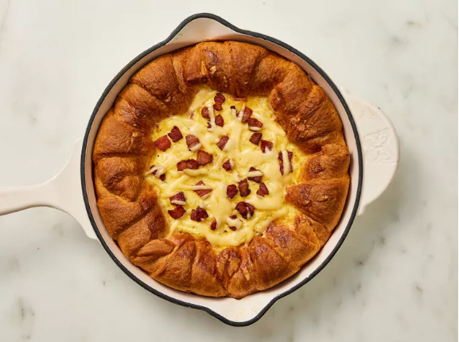

Home
Croissant Breakfast Pie

Description
When you need a comforting breakfast that also wows a crowd, this Croissant Breakfast Pie has you covered. It’s like a quiche with a little extra flair—swapping traditional pie dough for buttery, golden crescent rolls. The flaky crust perfectly hugs the creamy egg custard, creating a dish that’s both cozy and impressive.
Ingredients
- 1/2 (14.1 ounce) package refrigerated pie crusts (such as Pillsbury)
- 3 thick-cut bacon slices, chopped
- 3 large eggs
- 3/4 cup whole milk or half and half
- 1 teaspoon dry mustard
- 1/2 teaspoon freshly ground black pepper
- 1/2 teaspoon garlic powder
- 1/2 teaspoon kosher salt
- 1 (8 ounce) can refrigerated crescent rolls (such as Pillsbury)
- 1 cup shredded smoked Gouda cheese
- thinly sliced fresh chives
Steps
- Gather all ingredients. Preheat the oven to 400 degrees F (200 degrees C) with racks in the middle and lowest positions.
- Unfurl pie crust, and using a paring knife, trace the bottom of a (10-inch) cast-iron skillet; discard trimmings. Fit trimmed pie crust into the bottom of the skillet and dock all over with a fork.
- Bake in the preheated oven on lowest rack until just starting to brown, about 15 minutes. Remove from the oven and let cool slightly, about 5 minutes. Reduce oven temperature to 350 degrees F (180 degrees C).
- Meanwhile, place bacon in a large skillet over medium heat. Cook, stirring occasionally, until browned and crisp, about 8 minutes. Transfer bacon to a paper towel-lined plate.
- While crust cools, whisk together eggs, milk, dry mustard, pepper, garlic powder, and salt in a bowl until thoroughly combined. Set aside.
- Roll up 8 crescent rolls as per package instructions. Arrange rolls around the outer edge of the pie crust along the side of the skillet. Sprinkle bottom crust with 1/2 cup cheese and top with 1/2 of the cooked bacon. Pour egg mixture evenly over top, making sure not to get on top of the crescent rolls (some egg mixture will flow behind the croissants; that is okay, it will bake into the center). Sprinkle egg mixture with 6 tablespoons of cheese.
- Bake at 350 degrees F (180 degrees F) on the middle rack until crescent rolls are golden brown and egg is just beginning to set, about 20 minutes. Sprinkle evenly with remaining 2 tablespoons bacon and cheese, and loosely tent with aluminum foil. Return to the oven on the middle rack, and continue baking until sides are golden and center jiggles just slightly, about 20 minutes. Remove from the oven and let sit for 10 minutes.
- Carefully transfer pie to a cutting board (or, alternatively, serve in the skillet) and slice into 8 servings. Sprinkle with chives.
Home